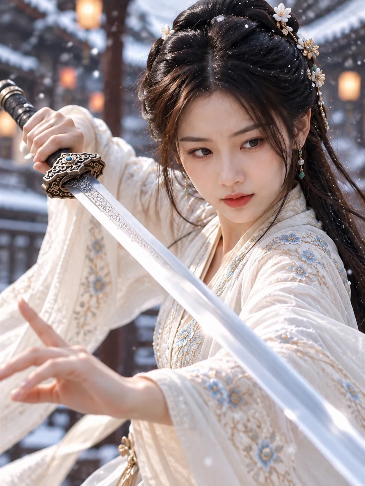
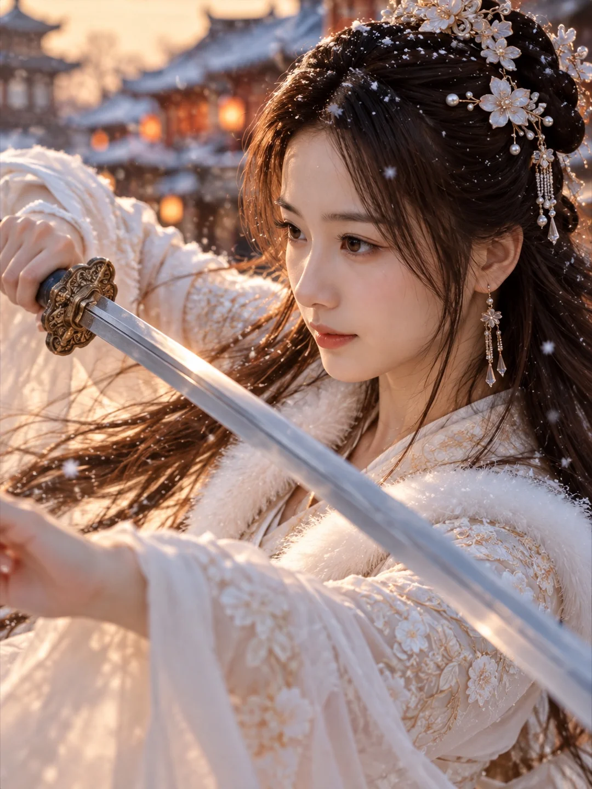
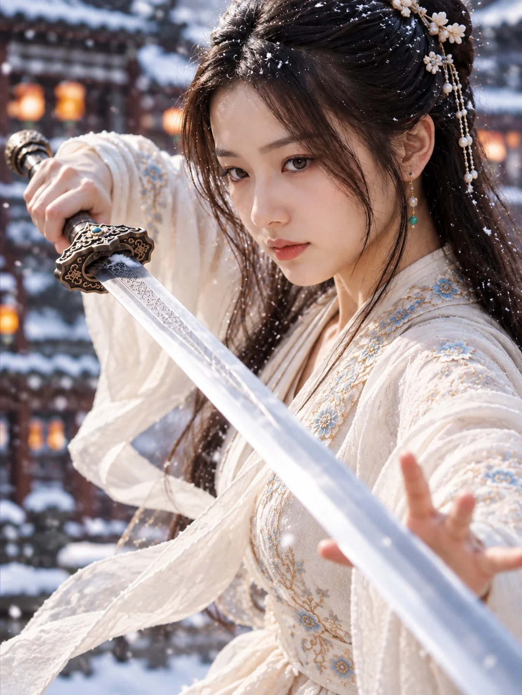
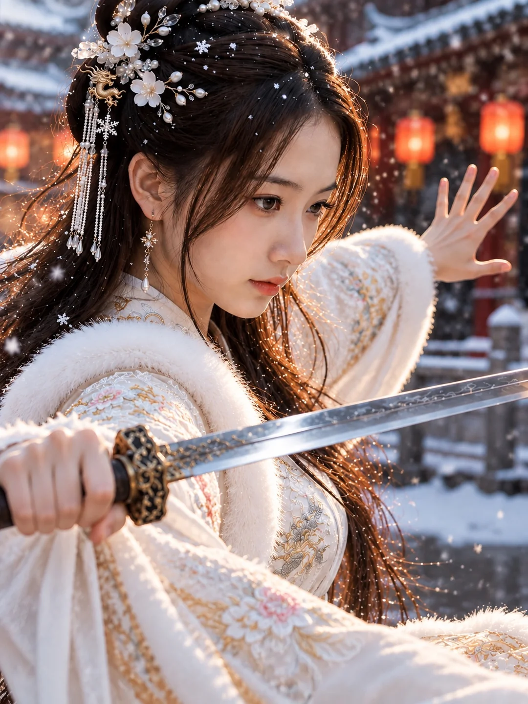
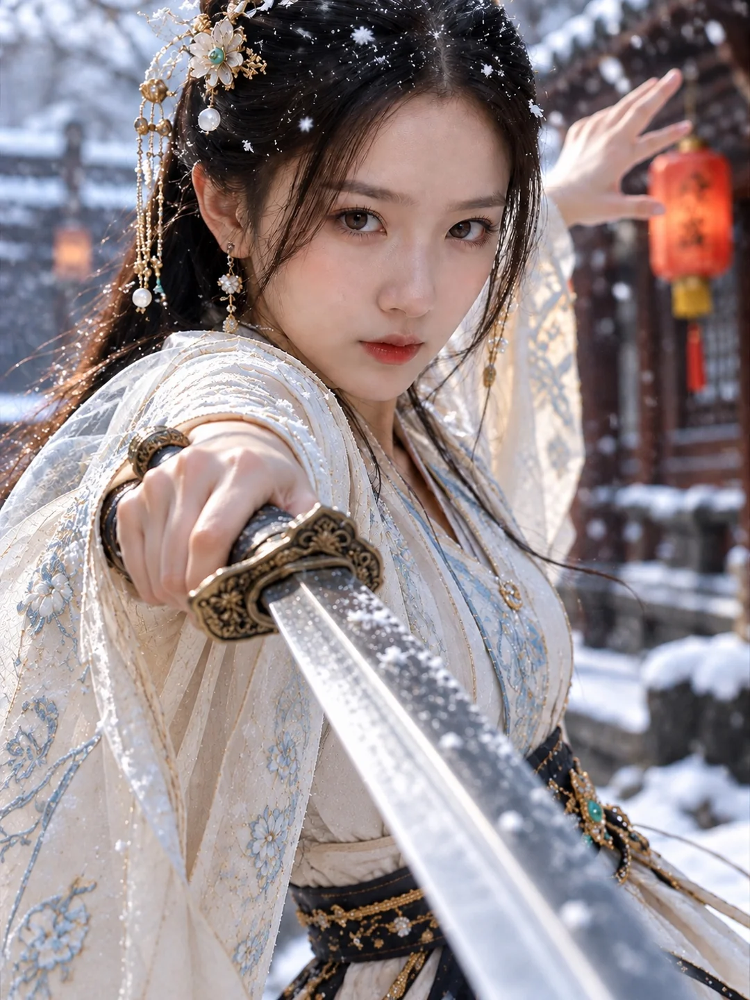

喵叔攝影館
從海岸策馬、雪庭舞劍到林蔭午後、月映晚霞與台北暮光，收藏那些值得停留的片刻。
「有些光不是為了照亮風景，而是為了讓一個瞬間願意留下來。」
先讓一張照片佔滿視線，再慢慢走進雪、樹影、晚霞與城市燈火。Moonlit 的攝影館不急著把所有作品一次交給你。
俠客行
花簪在暖燈裡亮過一回，走到水鄉，燈火便映進雪夜的河面。跟著人物走到梅枝下，才見一截長劍從紅袖裡伸出。
看過照片，也讓故事在鏡頭裡繼續。觀看《俠客行》影像短片 ↗ · 閱讀小說《俠客行》 ↗

花簪離燈很近，光落上去時，她剛把臉轉向鏡頭。

她斜倚繡榻，鬢邊花飾映著室內暖光，目光越過榻沿望遠。

華服的深色紋理在柔光下慢慢浮出，臉上的亮度剛好比它高一些。

她把臉轉到側面，花飾順著髮線向後延伸，接住燈的一面。

花簪映出細光，她坐得端定，衣襟的繡紋也一針一線看得見。

暖光漫到鬢間的花，人物身後仍留著一層沉靜的深色。

金色花飾沿髮際排開，燈下的側影便有了一圈細細的亮邊。

花影在她與日光之間輕輕落下，華服上的亮色深淺不一。

衣上佩劍的線條筆直，花影卻散在四周，同一幅裡有剛有柔。

夕照將花飾照出細密的金邊，轉向光的臉也被它輕輕托亮。

流動的金光沿衣料走過，鬢邊的花和肩上的繡紋交替入眼。

窗影切出一角較暗的地方，臉與花簪留在較暖的那一側。

她在金飾下定住目光，周圍再亮，視線也停得很安穩。

紅梅在雪團間露出色澤，正見她從白色深處回過頭來。

黑馬停在雪中，深色馬鬃與古衣相貼，梅枝的紅在旁邊格外清楚。

雪夜裡她轉頭一望，散開的暖燈從後方勾出髮影。

水邊的燈亮得低，回過來的臉比河上的倒影更清楚。

她在水岸回眸，遠燈落進水裡，細長的倒影延向她身後。

肩頭帶著夜雪的冷色，面前一層暖暈卻把眉眼照得很柔。

她停在雪夜的水鄉，臉轉回這一邊，街燈仍一路亮過水面。

暖燈照得出衣袖上的紋路，落雪把其餘部分留在冷色裡。

她持長劍立在燈前，袖緣與劍身各有一道亮線，飄雪恰從中間經過。

紅梅壓在雪景上方，她立於枝下，華裳映出另一層深紅。

劍影才從梅前轉過，衣袖已跟著舒開，細雪仍在下。

雪花經過金簪與劍身，兩處亮色一暖一冷，隨著轉身交會。

梅枝挨近劍鋒，細雪沿枝落下。她抬劍時，紅白都在近處。

她的目光先落在遠處，劍勢與步子才一起停定。

衣袖在燈下展成寬弧，雪與劍都在它尚未落回時入鏡。

劍身掠過梅枝前方，枝上的雪仍掛著，光已沿刃口走遠。

她迴身的幅度很大，紅衣從腳邊飛開，雪地顯得更亮。

在一大片雪色裡，劍鋒只留窄窄一道寒光，視線卻自然跟了過去。

劍已落低，她才從肩上回望，袖口仍帶著方才轉身的餘勢。

雪落滿庭，衣袖收束下來，梅枝與劍影都靜在白色裡。
海岸策馬｜踏浪而行
沿海岸走一段，沙灘從晴亮走到暮金。畫幅裡有馬蹄踏散的浪、被風吹開的髮絲，也有她在馬背上靜望遠海的幾次停留。

棕馬從海邊走進來，紅裙被風吹得一動，幾綹髮也同時離開肩頭。

海面把近景托得明亮，她從馬背望過來，金飾只閃在耳邊。

海風吹動棕馬的鬃毛，紅裙上的金線也在肩頭的晴光裡微亮。

她扶著韁繩迎向風，馬蹄一踏，白浪便在下方散開。

水面被低處的夕陽照亮，紅裙和馬鬃也各浮出一段金邊。

晴日把遠海照得通透，她和棕馬在紅藍之間迎風，長髮劃出一道柔和的弧線。

她把視線送向海岸遠端，風已將頭髮吹到同一側。

海天在遠處接平，近處的人影與馬身把畫幅分成深淺。

她從肩上回眼時，髮先貼近臉側，遠海仍亮得平整。

細碎的波光一路在馬身旁起落，韁繩上的手維持著同樣的步調。

海風把側臉旁的髮絲吹開，露出一段被陽光照亮的輪廓。

她迎著最亮的日光望來，背後的碧海明亮而開闊。

馬蹄踩進一層淺浪，飛開的水花跟紅裙擦身而過。

夕陽在海邊落得低，馬背上的紅衣還留著最後一層暖色。

側身時紅裙順著鞍邊垂下，海風吹動的是更遠一端的裙腳。

她從馬背回看，身後一整面碧海仍在閃著晴日的光。

浪花在較低的地方碎開，她隨馬向前，海岸還有很長一段。
雪庭舞劍
雪一直在下，劍勢卻時快時慢。起手前的凝神、迴身時飛起的袖，和夕陽在刃面一閃的亮色，都是這座雪庭的短短片刻。

一劍從白衣前伸出，雪光平亮，出劍的人只把眼睛定在前方。

她回過肩時，袖與劍分往兩側，細雪從兩條線之間飄下。
風先帶動垂髮，她立定腳步，劍鋒隨著起勢朝外揚起。

周圍仍在落雪，她只向劍尖外望去，手與身都沉了下來。
晚光斜過庭地，劍上有一點暖色，雪裡的白衣仍然很冷。

劍刃從雪前掠過，短短一道反光照出了出手的方向。

髮梢跟著轉身揚開，她回眼時，手裡的劍還留在原來的角度。
夕照貼上一側刃面，窄而亮，像在雪地上另畫了一筆。

她從腰肩轉出步勢，袖口往後飛，劍已劃到人影前方。

劍與手臂向前伸直，四周的雪向後退開，力道集中在很細的一點。
林蔭午後
往林蔭裡多走幾步，舊鐵道就在葉影底下出現。午後的光時而落在她身上，時而沿著鐵道向深處延伸。
樹葉在舊鐵道上篩出碎光，她停在樹旁，目光沿明暗交界向前。
林下有一處樹蔭正合適歇腳，枝葉的亮影只在她身邊落下一小片。
鐵道仍向林深處延去，稀薄的光停在枝葉和路面相接的地方。
月映晚霞
晚霞在山稜旁只剩一片橘紅，月亮已浮在顏色更深的天上。一上一下，剛好照見白晝交給夜晚的時候。
山邊的橘色還沒褪盡，月亮已掛在高一點的藍色裡。天與山各自留著一種傍晚。
台北夜色
先暗下來的是遠山，隨後可以看見橋上與樓間的燈。沿五幅天際線往下看，台北的傍晚由一片霞光分成了千百點人間燈火。
山緣還有夕照，街上已起燈火。台北的一明一暗在遠景裡並著走。
橋與樓先亮起，遠山逐漸轉深，天邊仍留著尚未散盡的晚霞。
晚霞鋪得很低，近處逐盞亮起的街燈沿城市擴開。
天色已深成藍，地上的燈帶和樓影仍看得分明。
城市靠著天際剩下一道暗輪廓，越往近處，燈火越密。
月下紅衣女劍客
有時她倚燈理髮，近得看清紅花和金繡。有時人與黑馬已在月前，紅袍順著長風展開。這輯沿著燈下的細節看向城外，也把劍光留在途中。

紅花插在鬢邊，她在窗光裡托著腮，眼神比姿態還近。

她略抬下巴，讓指尖歇在頸旁，後面的深藍一路落向肩頭。

夜光照在馬鞍一側，她與黑馬朝同一方向走，紅衣在鞍旁揚開。

金線沿領口密密展開，鬢上紅花在燈前正好輝映著它。

她轉肩時，披風在後面慢了一拍，冷色裡掠過一道金邊。

幾片紅瓣被風吹進近景，她從散開的額髮下直直望來。

她低頭向袖口看去，紅瓣掠過手邊，衣上的紅顯得更深。

石沿承住手肘，她讓頭稍偏，髮間幾朵紅花也斜了過去。

月輪在深藍中顯得很近，她抬手仰望，指尖卻還隔了一段夜。

她掀起薄紗的一角，紗面未落，底下那道目光已經清楚。

她回頭望過城燈，長髮向外揚起，遠處的亮點留在肩後。

她以指尖碰著下巴，視線向旁邊收去，袖上金紋由近及遠。

燈在她身側照得很暖，托住下頷的是一段暗紅衣袖。

她側著身坐在燈前，紅衣從膝旁垂下，金色沿衣褶淺淺落著。

她斜斜抬眼，幾綹髮遮在臉側，紅衣從下方把側臉襯亮。

她把身子伏向桌沿，臉將要枕上手臂，暖色沿桌邊走過。

她在月下轉過肩，袖擺被風拉長，正好露出身後的月亮。

手臂一舉越過頭頂，彎起的袖口以金繡勾出一段弧形。

馬背上的她面向冷月，紅袍和髮尾都在風裡向後伸去。

雙臂收在胸前，她稍仰頭，藍夜裡正有幾點城燈。

她側望遠處，手還攏著韁繩，袍角被夜風吹向馬尾。

她屈膝坐下，手停在近臉的位置，遠方城燈才漸漸顯出。

劍身從前景斜進來，冷光沿刃口掠過，她仍平視鏡頭。

她把手掌按到石沿，紅袖也隨之向前，暖光照見一圈袖緣。

月照高處，她在劍柄旁低頭，刃尖已經斜向地面。

她用指節把臉輕輕撐住，袖面上的金線順著腕部垂下。

肩一轉，披風外沿隨後揚起，她已從側面回望城燈。

她將手臂交疊，臉靠過來，幾瓣紅色剛好懸在視線上方。

迎著月亮，她抬臉，把肩上深紅的衣料留在清冷夜色裡。

紅花從髮側垂出，她肩背向外，只把眼睛送回畫面裡。

她把胳膊擱在欄上，頭朝手臂偏了偏，月色仍從背後照來。

她打開掌心迎風，袖口的紅與散落的花瓣同時到了近處。

她回眸時側肩仍背向鏡頭，紅花從頭髮裡密密露出一角。

滿月從騎影後面升起，她收韁放慢，袍邊剛好經過冷光。

她坐於石上，長袍順坡勢垂下，遠山在月光裡隱隱可辨。

手向前攤開，指尖離鏡頭最近，視線從手臂上方望到此處。

扇展半面，她在扇緣上方微抬下巴，袖上金紋留在較暗處。

她把側臉仰向高處的冷光，紅花順著髮勢落到後肩。

近鏡中，她的臉才從肩頭轉回來，眼角前還有一線垂髮。

她合眼向後仰，髮絲與袖裡各有一點暖光，恰與暗處相接。

她雙手握柄將劍送到前方，刃口的亮色斜過紅袖。

暮光穿過雲間，她在石邊停住，靴與袍都落進淡金色裡。
手掌朝花雨張開時，風把髮梢往另一方拂去，紅瓣仍向下。

她將衣袖斂回身前，眼神也跟著低下來，衣紋在燈下微亮。

手指停在下頷旁，她略一仰臉，肩側露出大片金色繡紋。

簾影留在椅後，她垂手倚近，背後燈色襯得衣袖更紅。

她抬手靠近下巴，長髮卻一直向下，垂在胸前那道金繡上。

她在黑馬背上望回一眼。月亮與花瓣分在藍夜的兩端。

她仍在馬上，一手提至唇旁，另一側紅袍順著鞍垂下。

她抬手把髮撥向一側，眼睫微垂，室內金光照過衣領。

韁繩在身前收攏，她在馬背定住，城燈落到遠山下方。

她攏一下繡領就抬臉，幾片花瓣正從身後暗處經過。

月亮落在肩後，指尖靠近唇邊，髮簪上的紅仍是近景最亮一點。

她把紅袖抱向肩前，身子側轉，長髮向下垂得更近。

她偏頭坐著，手與衣袖一同放低，金紋在膝旁展開。

橫笛已送至唇前，她垂下眼簾，紅瓣從畫幅暗處飄過。

她伏到交疊的衣袖上，桌沿反起來的暖色貼著她的臉。

她伸手朝向月輪，掌外幾片花瓣亮起，離得比月亮更近。

月下的身影按住腰側，披風往後掀，露出束腰處的金紋。

一掌沒入髮間，另一臂還倚著袖，燈光只落在身後小小一塊。

她把劍斜送至近處，眼神順著鋒線一路落向鏡頭。

燈前一膝曲起，她低坐著，黑靴與寬紅袖相鄰卻各有亮度。

她合眼仰向月色，紅衣鬆落在肩側，暗夜在背後更深。

她把雙膝收向身前，俯首坐在石上，紅衣遮去石面一角。

她在馬首旁抬手停住，垂下的紅袍在冷色裡拉成長長一道。

她微微偏頭向夜，月光照見幾根散髮及近處的眼睫。

她在鞍上收緊手裡的韁繩，紅衣被迎面的風帶向一邊。

最後一幅，她仍然望得很近，指尖在唇畔，燈只在背後留了幾點。